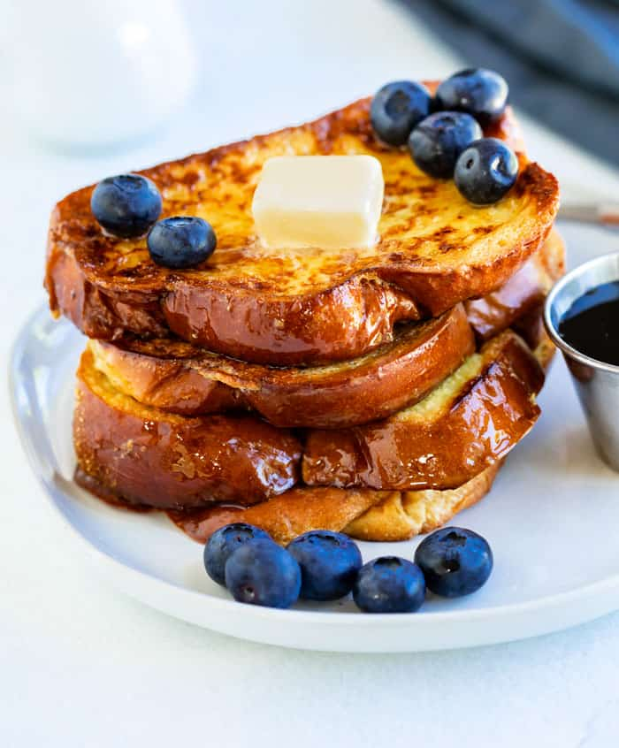

Golden Soft French Toast Recipe

Alton Brown's French Toast Recipe
When it comes to breakfast recipes, it is truly hard to beat classic French Toast.
There are so many subtle differences on how you can make French Toast and how it ends up holding up and tasting.
After testing out tons of methods, I have to say that Alton Brown definitely has the perfect French Toast formula
figured out. This is definitely the recipe you'll want to keep on hand for getting perfect French Toast every time.
Ingredients
- 2 Tablespoons honey
- ¼ Tsp salt
- 3 eggs
- 1 cup half and half
- 1 loaf bread, (Brioche, Challah, or Country Loaf)
- 4 Tablespoons butter
Steps
Before you start:
-
Alton Brown advises to cut your loaf into 8 (1/2 in slices).
I much prefer slices 1-inch in size.
-
Your slices are MUCH more likely to hold up well if you bake
them on wire racks at 300 degrees F for 8 minutes on each side.
If your bread is stale, this isn't as necessary, but fresh bread
has a better taste and can obtain the dry constancy that it needs by baking it.
Making the French Toast:
- Preheat oven to 375 degrees.
-
Heat the honey for 15 seconds in the microwave. Whisk it in a pie pan with the eggs,
salt, and half and half.
- Place a cooling rack on top of a sheet pan.
-
Dip each side of the bread into the custard, allowing it to absorb for about 10 seconds,
(it will hold up well if it's been baked as noted above.)
- Place the bread on the cooling rack for 1-2 minutes.
- Melt 1 Tablespoon of butter in a large pan over low heat.
-
Place 2 slices of bread at a time in the pan and cook each side until golden brown,
about 2-3 minutes/side.
- Remove the bread from the pan and place on the middle rack in the oven for 5 minutes.
- Repeat for all slices. Serve immediately with syrup, fruit, and/or whipped cream.